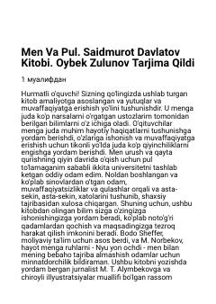

MVPul bilan to'g'ri munosabat orqali moliyaviy erkinlikka erishish sirlari.
Bu kitob moliyaviy erkinlikka erishish va boylik sirlarini o'rganishga bag'ishlangan amaliy qo'llanma. Muallif Saidmurod Davlatov o'z hayotiy tajribasi va ustozlaridan olgan bilimlar asosida o'quvchilarga pul bilan to'g'ri munosabatda bo'lishni o'rgatadi. Kitobda moliyaviy erkinlikning 6 asosiy siri va muvaffaqiyatga erishish yo'llari bayon etilgan.